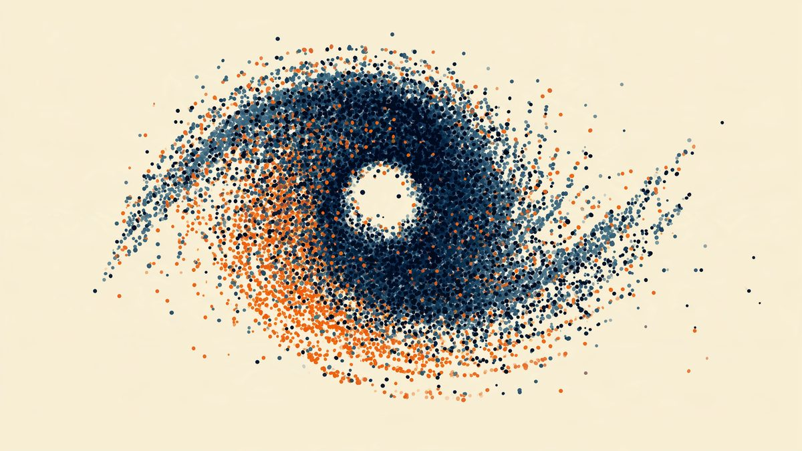

投資日記
運営者自身の投資判断をあとから振り返る、事後報告型の記録です。将来の売買を呼びかけるものではありません。
証券口座の多さに圧倒され、手続きが面倒で先延ばしにし、開設後も何を買うか迷った話。金額や商品名は伏せ、始めるまでの足踏みと、始めてからの実感だけを残す投資日記です。

2021年春、SNSの盛り上がりに乗って複数のアルトコインを買い始め、5月の急落相場でも手を止められなかった話。金額は伏せ、比率と反省だけを残す記録です。
米国株30%・投資信託30%・日本株20%・仮想通貨10%・現金10%。金額は伏せ、比率だけを残す最初の定点記録です。